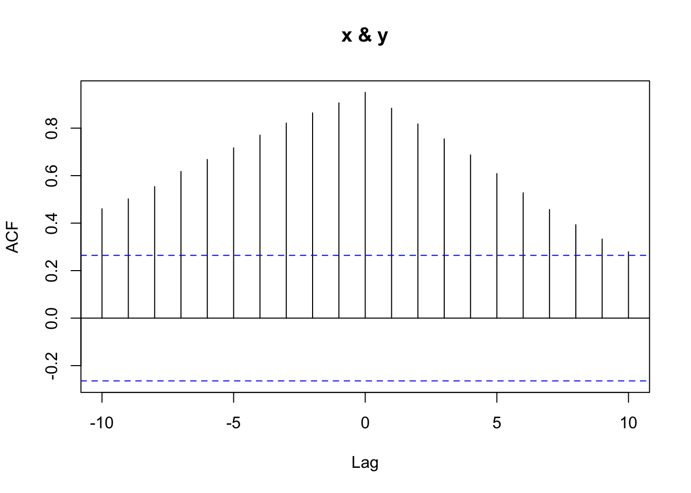
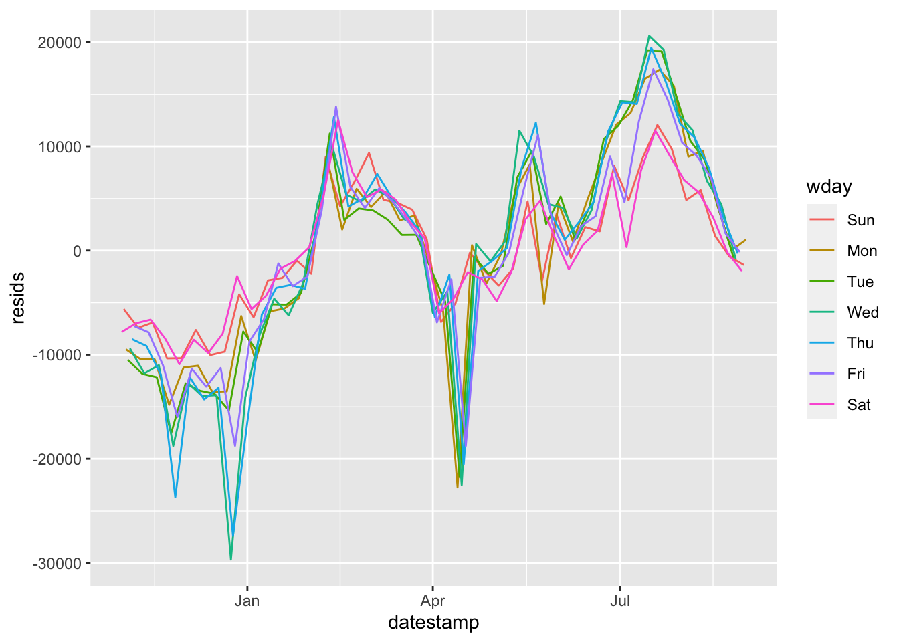
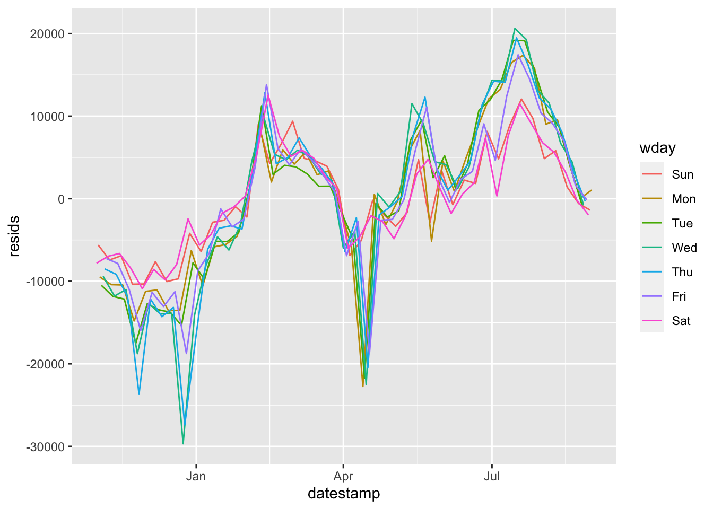

Chapter 4 Week 1
idea- make a lab question about smoothing
4.1 Time Series Data
A time series is an ordered sequence of observations. The ordering is usually through time, particularly in terms of some equally spaced time intervals.
Time series data creates unique problems for statistical modeling and inference.
- Traditional inference assumes that observations (data) are independent and identically distributed. Adjacent data points in time series data are not necessarily independent (uncorrelated).
- Most time series models aim to exploit such dependence. For instance, yesterday’s demand of a product may tell us something about today’s demand of a product.
There are several different ways to represent time series data in R.
We will use the
tidyversefamily of packages extensively in this class. This package includes thelubridatepackage, which includes functions to work with date-times.Two of the most common ways to represent time series data are using data frames in which one of the variables is a time object (such as POSIXct or Date) or using a time series object. These two representations are shown below with simulated trading data for a single 8-hour trading day.
set.seed(1)
# option 1: represent time series data within a data frame
hr = seq(mdy_hm("12-11-2023 09:30"), mdy_hm("12-11-2023 16:30"), 'hour') # 8 hours
pr = rnorm(8) # generate fake trading data
trading_dat = data.frame(hr, pr)
# option 2: represent time series data using a time series object
trading_ts = ts(data = trading_dat$pr, start = 1, frequency = 8)4.2 Time Series EDA
The first thing to do in any data analysis is exploratory data analysis (EDA). Graphs enable many features of the data to be visualized, including patterns, unusual observations, changes over time, and relationships between variables. The features that are seen in plots of the data must then be incorporated, as much as possible, into the forecasting methods to be used.
R has several systems for making graphs. We will primarily use ggplot2, which is among the set of tidyverse packages and is one of the most versatile systems for plotting. We will use a data set from Kayak to motivate our analysis.
conversions = read.csv("https://raw.githubusercontent.com/dbreynol/DS809/main/data/conversions.csv")
knitr::kable(head(conversions))| datestamp | country_code | marketing_channel | conversions |
|---|---|---|---|
| 2014-11-01 | be | Display Ads | 1174 |
| 2014-11-01 | be | KAYAK Deals Email | 57 |
| 2014-11-01 | be | Search Engine Ads | 1122 |
| 2014-11-01 | be | Search Engine Results | 976 |
| 2014-11-01 | fi | Display Ads | 12 |
| 2014-11-01 | fi | Search Engine Results | 2 |
This dataset contains information on the total number of daily conversions by country and marketing channel. Let us focus our analysis on the US and fist visualize the number of conversions by day.

This plot contains a lot of information. To gain insight into how the conversions depend on marketing channel, we can use facets. Facets are subplots that each display a time series for one of the marketing channels.

Display ads and search engine ads are the dominant marketing channels. Both have a very regular pattern that is likely a function of the day of week, with a higher number of conversions during the weekdays as compared with weekends. We can further explore this feature by aggregating over the weekday and computing how the distribution of conversions changes by day.

Clearly there are significant changes in the mean across the week. This is a form of seasonality. It may be useful to see what the data look like when this weekday effect is removed. To do so, we could visualize the residuals from the following linear regression model:
 

assignment - nycflights
4.3 Multiple Time Series
demo - case shiller home prices vs. gdp per capita
## `geom_line()`: Each group consists of only one
## observation.
## ℹ Do you need to adjust the group aesthetic?
assignment - kayak
4.5 Lab 1
- Starting from the code chunk in Time Series Data, extend the simulated training data to a full week (December 11 through December 15, eight hours each day). Using the data frame representation,
plot(trading_dat$hr, trading_dat$pr). Using the time series data,plot(trading_ts). What are the differences between these two plots?